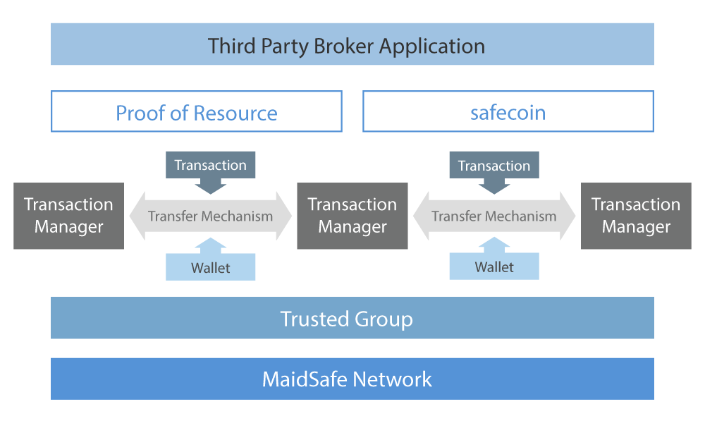

<div class="container-12">
  <div class="grid-9 main-content">
    <h1 class="safecoin-head">Safecoin</h1>
    <p>Safecoin is the currency of the SAFE network and a mechanism to incentivise and reward
      end users and developers as well as provide access to network services. End users who
      provide their unused computing resources to the network, called <a href="farmers">Farmers</a> are rewarded in safecoin, while application developers, called <a href="app-builders">Builders</a> earn safecoin in proportion to how often their applications are used. Developers who
      improve the core SAFE network code base can also earn safecoin by providing bug fixes
      and new features. In the case of farmers and builders, safecoins are generated and
      distributed entirely by the network, without any human involvement. Core developers are
      rewarded by polling the developer mailing list.</p>
    <p>
      Safecoin can only reside within the SAFE network and will be stored in a users wallet and
      used in exchange for network services; such as increased storage space and access to
      network applications. There is no set distribution time for safecoins. Unlike many
      currencies, the distribution of safecoin is backed by information and the amount of coins
      generated by the SAFE network is directly related to the amount of resource provided to it.</p>
    <p>The following table attempts to predict coin distribution based on a number of assumptions, such as; number of nodes, amount of data per node and number of storage attempts.</p>
    <table class="table">
      <tr>
        <td>Year</td>
        <td>Number of Nodes</td>
        <td>Average Data (GB) Per Node</td>
        <td>Accumulated Attempts</td>
        <td>Attempts Percentage</td>
        <td>Coin Distributed</td>
      </tr>
      <tr>
        <td>1</td>
        <td>10000</td>
        <td>16</td>
        <td>88740000</td>
        <td>2.07%</td>
        <td>2.00%</td>
      </tr>
      <tr>
        <td>2</td>
        <td>50000</td>
        <td>32</td>
        <td>955700000</td>
        <td>22.25%</td>
        <td>20.00%</td>
      </tr>
      <tr>
        <td>5</td>
        <td>100000</td>
        <td>64</td>
        <td>4096000000</td>
        <td>95.37%</td>
        <td>70.00%</td>
      </tr>
      <tr>
        <td>10</td>
        <td>200000</td>
        <td>128</td>
        <td>17476200000</td>
        <td>406.90%</td>
        <td>98.00%</td>
      </tr>
      <tr>
        <td>20</td>
        <td>500000</td>
        <td>256</td>
        <td>92842500000</td>
        <td>2161.66%</td>
        <td>99.99%</td>
      </tr>
    </table>
    <p>Given significant demand the SAFE network would receive significant resource and
      subsequently generate a large number of coins. If demand were to slow, less resource
      would be provided and coin distribution would slow. This logic ensures no over supply,
      curbing inflation and retaining the currency value for all holders of safecoin.</p>
    <p>
      Safecoin has a predictable cap of 4.3 billion coins and at present, only 10% have been
      released via an intermediary coin, MaidSafeCoin, during a <a href="http://www.coinssource.com/maidsafe-storms-in-with-6mil-in-funding/" target="_blank">crowd sale</a> that took place at the end of April. Safecoins are managed by the network’s Transaction
      Manager. This is the SAFE equivalent to the block chain, however, in SAFE’s case it is
      unchained, keeping record of only the existing and previous owner. In this respect,
      safecoin should be thought of as digital cash.</p>
    
  </div>
  {% include html/overview_side_panel.html %}
</div>
